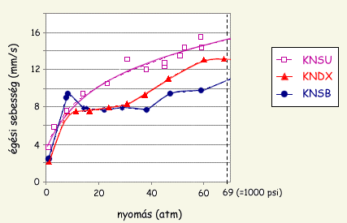

"Cukros üzemanyagok" fedõnév alatt igazából három egymástól kismértékben eltérõ üzemanyag fut. Az eredeti üzemanyag cukrot (szacharózt) tartalmazott, amelyet a késõbbi fejlesztések során szorbitollal (a dextrózra nagyon hasonlító mesterséges édesítõszer, egy ún. cukor-alkohol) és dextrózzal (szõlõcukor) helyettesítettek, a készítés során fellépõ veszélyeket kiküszöbölendõ. Az erdeti cukros verzió ma már nem igazán használatos, de a dextrózos és szorbitolos verziók nagyon népszerûek és még mindig "cukros"-nak vannak titulálva. Mivel igen megbízható és meglehetõsen erõs rakétamotrok építését teszik lehetõvé, a cukros üzemanyagok igazi karriert futottak be és nagyban hozzájárultak az amatõr rakétázás elterjedéséhez.Az amatõr "szakzsargon" a szacharózos verziót KNSU (az angol sucroze-ból), a dextrózos verziót KNDX (dextrose), a szorbitolos verziót pedig KNSB (sorbitol) néven említi és ez az oldal is ezeket a jelöléseket használja.
A káliumnitrát-cukor üzemanyag felfedezése Bill Colburn amerikai rakétás nevéhez fûzõdik. Colburn a lõporos motrok mintájára a motorba préselte a por formájú üzemanyagot; az elsõ ilyen rakéta 1947-ben startolt a nyugati partokon. Az igazi áttörés azonban csak néhány évre rá következett be, amikor is a KNO3/cukor keverék összeolvasztott formáját kezdték használni. Ez már egy "igazi" rakétaüzemanyag volt, állandó tulajdonságokkal és meglehetõsen magas fajlagos impulzussal (már a kezdetekben Isp = 110 s gyakorlati értékeket értek el). Az üzemanyag rohamos térhódítása Brinley publikációjáhjoz köthetõ (B.R. Brinley - Rocket manual for amateurs, 1960), ezt megelõzõen csak kevesen használták. Az ezutáni évtizedekben sok lelkes amatõr és amatõr rakétás klub tesztelte és fejlesztette tovább ezt az üzemanyagot, így pl. a belga BVRO (késõbb csak VRO) és a brazil SEF klubok is. Ennek a kutatómunkának az eredményeként született meg a KNO3/szorbitol üzemanyag (a szorbitolt a BVRO említi elõször mint a cukor helyettesítõjét, 1977-ben) illetve a KNO3/dextróz üzemanyag (Richard Nakka kanadai rakétás fejlesztése, 1996). A számtalan teszt eredményeként mára már mindhárom üzemanyag jellemzõi jól ismertek, ami nagyon biztonságossá teszi a felhasználásukat. Újabban két amerikai cég is gyárt és forgalmaz szorbitolos üzemanyagokat, többhasználatú modellrakétamotrok utántöltésére.
A cukros üzemanyagok fõbb tulajdonságai az 1. Táblázatban vannak összefoglalva. A táblázatban szereplõ értékek a cukros üzemanyagok olvasztással készített változatára vonatkoznak. Az eredeti, szacharózos verzió csak azért van feltüntetve, hogy szemléltesse milyen veszélyesen magas hõmérséklet szükséges az elõállításához illetve hogy miért volt szükség a szacharózt dextrózzal és szorbitollal helyettesíteni. Mindhárom üzemanyag világos színû, kemény és rigid tömböt alkot, amely felülete picit nedves lehet a levegõ relatív nedvessétartalmától függõen. A szacharózos változat enyhén sárgás-barna színû, mivel az olvadáspontján a szacharóz azonnal bomlásnak indul (karamellizálódik) és sötétre színezi az amúgy fehér keveréket. A KNDX épp hogy csak sárga árnyalatú, míg a KNSB kissé átlátszó fehér.
üzemanyag KNO3/szacharóz KNO3/dextróz KNO3/szorbitol oxidálószer/tüzelõszer arány (tömeg %) 65/35 65/35 (~62/38)* 65/35 olvasztási hõmérséklet (°C) 174 - 190 98 - 123 * 91 - 125 öngyulladási hõmérséklet (°C) > 300 > 300 > 300 sûrûség (g/cm3) 1.80 1.86 1.82 higroszkopicitás (60% relatív légnedvességnél) jelentõs kismértékû kismértékû elméleti Isp (s) 166 164 164 gyakorlati Isp (s) 100 - 140 100 - 140 100 - 140 égési sebesség @ 1 atm (mm/s) 4 2.1 2.6 égési sebesség @ 69 atm (mm/s) 15.3 12.9 11.6 égéstermékek molekulatömege (g/mól) 42 42.4 39.9 * - dextróz-monohidrátra vonatkozó értékek. Anhidrid dextróz használata esetén 146 °C 1. Táblázat:
a cukros üzemanyagok
legfontosabb jellemzõi
(Richard Nakka után)
Látható, hogy a három üzemanyag tulajdonságai csak nagyon kevéssé különböznek egymástól. Rakétatechnikai szempontból a három termék igazából szinte egyforma, jelentõs eltérés csak az égési sebességben tapasztalható. Annál fontosabb azonban a gyártásukat nagyban befolyásoló olvasztási hõmérsékletben tapasztalható eltérés. Míg a szacharóz 198 °C hõmérsékleten olvasztható össze a káliumnitráttal, addig a KNDX és a KNSB a gyakorlatban már a 100 - 125 °C intervallumban elkészíthetõek (a dextróz olvadáspontja 146 °C, a szorbitolé 99 °C). Ez a gyakorlatban annyit tesz, hogy míg a szacharózos verzió készítése meglehetõsen veszélyes, hiszen a megolvadt üzemanyagelegy könnyen belobbanhat, a dextrózos és szorbitolos változatok esetén az olvasztási hõmérséklet és a keverék gyulladáspontja közötti nagy külnbség viszonylag biztonságossá teszi a gyártási folyamatot. A szorbitol akár külön is megolvasztható és csak ezután keverõdik bele a KNO3, amikor már rég nincs a közelben semmiféle hõforrás. Az alacsonyabb olvasztási hõmérsékletnek más elõnyei is vannak, amelyek mind a szacharóz leváltása mellett szóltak: míg az olvasztott KNSU csak nagyon rövid ideig volt olvasztott állapotban tartható mert az olvadási hõmérsékleten elkezd bomlani, a KNDX és KNSB esetén nincs ilyen probléma. A KNSU olvasztásánál az is problémát jelentett, hogy az olvadt üzemanyag felhasználásával ugyancsak sietni kellett, mert az olvadék nagyon hamar megszilárdul (ezért pl. elõre felforrosított kanállal dolgoztak az úttörõ rakétások). A KNDX már sokkal kényelmesebben feldolgozható, egyrészt mert olvadt állapotban tartható anélkül hogy elbomlana, másrészt mert hosszabb ideig marad képlékeny. Ebbõl a szempontból pedig legelõnyösebb az olvadt KNSB, amely formába öntés után még órákon keresztül alakítható marad. Érthetõ hát, hogy a két "fiatalabb cukros" elõnyeinek köszönhetõen szinte teljesen kiszorította az eredeti KNSU üzemanyagot.
A KNDX és KNSB esetén fontos odafigyelni a helyes tömegarányokra, mert úgy dextróz mint a szorbitol anhidrid és hidrát formában is létezik. A kereskedelemben kapható dextróz általában dextróz-monohidrát, amelybõl az anhidrid melegítéssel (a víz elpárologtatásával) nyerhetõ ki. A dextrózzal ellentétben a kereskedelmi szorbitol legtöbbször anhidrid, nem tartalmaz tehát vizet. A hidrát formájú dextróz 9.1 %, míg a szorbitol 4.5 % vagy 9 % vizet tartalmaz (attól függõen hogy fél molekula vagy egy molekula vizet tartalmazó formáról van szó). Ennek következtében több dextrózt vagy szorbitolt kell a káliumnitráthoz keverni mintha anhidrid (vízmentes) formában használnánk. A módosított arányok az 1.Táblázatban zárójelben vannak feltüntetve. A kristályvizes dextróz elõnyös tulajdonsága, hogy olvadásuk alacsonyabb hõmérsékleten elkezdõdik mint az anhidrid formáknak. Ezért míg az anhidrid dextróz olvadáspontja 146 °C, addig a dextróz-monohidrát már 90 °C környékén elkezd feloldódni a kristályvizében és 123 °C-on már teljesen olvadt formában van.
|  |
| 1. Ábra: Cukros üzemanyagok égési sebessége a nyomás függvényében (Richard Nakka nyomán) |
A fenti táblázatból látható, hogy az égési sebesség tekintetében jelentõs eltérés tapasztalható a három üzemanyag között. A KNSU égési sebessége atmoszférikus nyomáson szinte kétszerese a másik két üzemanyagénak és 1000 psi nyomáson is 30-40 %-al nagyobb mint ez utóbbiaké. Ennél azonban sokkal fontosabb az a tény, hogy a három üzemanyag égési sebessége egész másként változik a nyomással. Az 1. Ábrán a cukros üzemanyagok égési sebessége van feltüntetve a nyomás függvényében. Látható, hogy a három görbe jelentõsen eltér egymástól. A KNSU égési görbéje a legszabályosabb, ugyanis növekvõ nyomással folyamatosan nõ az égési sebesség (ezt nevezzük szabályos de St. Robert viselkedésnek). A KNDX égési sebessége kezdetben hasonlóan nõ mint a KNSU-é, de úgy 15 atm környékén ez a növekedés lelassul és az égési sebesség megközelítõleg állandó marad kb. 35 atm-ig. A görbén ebben a nyomástartományban egy lapos rész figyelhetõ meg, ahol az égési sebesség értéke 7.5-8 mm/s, ezután az égési sebesség ismét elkezd nõni a nyomással (az ilyen viselkedésformát plateau-nak nevezzük). A legszabálytalanabb a KNSB viselkedése, ugyanis az égési sebesség egy maximum után (9.5 mm/s @10 atm) a 15-40 atm nyomástartományban alacsonyabb értékeket mutat (7.5-8 mm/s) majd ismét növekedésnek indul. Az égési sebesség ilyen változását szaknyalven mesa-nak nevezzük.
Mivel a szilárd üzemanyagú rakétamotrok általában egy adott üzemi nyomásra vannak tervezve, az égési sebességnek a fenti módon való változása szerencsére nem okoz túl sok gondot. KNDX és KNSB motrok esetén jó az üzemi nyomást valahová 20 és 35 atmoszféra közé tervezni, ahol szép semleges égési viselkedést kapunk. Mindenképpen megnyugtató, hogy az égési sebesség magasabb nyomásokon sem kezd el ugrásszerûen nõni (mint azt a lõporos üzemanyagok esetében láthattunk), ilyen szempontból tehát nem fenyeget motorrobbanás veszélye.
| 2. Ábra: KNO3/Szorbitol üzemanyagú rakéta fehér füstje (www.oregonrocketry.com) |
Az égési sebesség növelésére a dextrózos és szorbitolos üzemanyagokhoz különbözõ katalizátorokat lehet adagolni kis mennyiségben (1-2%). Katalizátorként legjobban a barna vas-oxid (Fe2O3) vált be a tapasztalatok szerint, használata magas nyomáson az égési sebesség jelentõs növekedéséhez vezet. Így pl. a KNDX üzemanyag égési sebessége atmoszférikus nyomáson V0 = 2 mm/s úgy katalizátorral mint katalizátor nélkül, de 30 atm nyomáson már V = 8 mm/s vas-oxid nélkül és V = 13 mm/s 1 % vas-oxid adalékkal. Az 1% Fe2O3 tartalmú KNDX üzemanyag égési sebessége a "tiszta" KNSU üzemanyagéhoz hasonlítható és nem mutat többé plateau tulajdonságokat (jól leírható az 1. Ábrán látható lila vonallal). Jó tudni, hogy az üzemanyag nedvességtartalma jelentõsen csökkenti az égési sebességet, ezért a minél szárazabb üzemanyag elõállítására törekedjünk és a tárolás során is óvjuk a nedvességtõl a cukros üzemanyagokat.
Fajlagos impulzus tekintetében a cukros üzemanyagok igencsak lepipálják a lõporos üzemanyagokat. Egy dextrózos vagy szorbitolos motor gyakorlatban könnyen Isp = 100 s fölött teljesít (de akár Isp = 130-140 s is elérhetõ velük), míg a lõporosok esetében kb. az Isp = 90 s jelenti a felsõ határt. A nagyobb Isp több tényezõ együttes hatásának köszönhetõ. Egyrészt a cukros üzemanyagok égéstermékeinek nagyobb része gázhalmazállapotú mint a lõporosoké és ennek következtében nagyobb az üzemi nyomás, másrészt meg a kiáramló részecskék kisebb átlagos molekulatömegûek (kb. 40 g/mól vs. 45 g/mól), ezért nagyobb sebességre fel tudnak gyorsulni a fúvókán. Természetesen a cukros üzemanyagok égése során nagy mennyiségû szilárd és folyékony égéstermék is keletkezik, amelyek sûrû fehér füstöt eredményeznek. Az 2. Ábra egy KNSB üzemanyagú rakéta kilövését mutatja, jól látható rajta a cukros üzemanyagokra jellemzõ sûrû fehér füst. A sok füsthöz nagyon kevés láng társul, ezért nem használják a cukros üzemanyagokat tüzijátékrakéták meghajtására.
Mindhárom cukros üzemanyag higroszkópos valamilyen mértékben. Ebbõl a szempontból a KNSU áll a legrosszabbul, míg a KNDX és fõleg a KNSB esetén ez kevésbé zavaró. A levegõ magas relatív nedvességtartalma esetén azonban ez utóbbi két üzemanyag is fokozottan nedvszívó, ezért ajánlatos jól lezárt dobozban tárolni. A KNDX estén a tapasztalat azt mutatja, hogy a kristályvizes dextrózt használunk alapanyagnak, az üzemanyag kevésbé lesz nedvszívó mintha az anhidrid formát használtuk volna. Teljesen kiszáradt állapotban a KNDX-nek és KNSB-nek nem nedves a felülete és csak kevéssé nedvszívóak.
A cukros üzemanyagok készítésének ugyanaz a lényege mint bármely más heterogén rakétaüzemanyagénak: az összetevõk minél tökéletesebb összekeverése, hogy azok minél nagyobb felületen érintkezzenek egymással. Ennek érdekében fontos tehát minél kisebb szemcseméretûre õrölni a komponenseket és minél alaposabban összekeverni õket. A cukrok alacsony olvadáspontjából adódóan egy hatékonyabb módszer is rendelkezésre áll, éspedig az összeolvasztás. Ennek során az egyik komponens (dextróz vagy szorbitol) megolvad és körbeveszi a KNO3-szemcséket. Ez a módszer sokkal jobb érintkezést biztosít az oxidálószer és tüzelõanyag között mint az egyszerû öszekeverés és ebbõl adódóan jobb minõségû üzemanyagot eredményez. Van egy harmadik elõállítási mód is, az újrakristályosítás, amely azon alapszik, hogy úgy a cukrok mint a KNO3 oldódik vízben. Ezzel a módszerrel úgymond "összeoldjuk" a komponenseket, a kész keverékrõl pedig egyszerûen lepárologtatjuk a vizet. A továbbiakban mindhárom készítési mód részletesebben le van írva.
Összeõrlés: csupán a szacharózos változat esetében van jelentõsége, mivel az olvasztás ez esetben meglehetõsen veszélyes lenne. Az összetevõket külön-külön finom porrá õröljük, majd a kívánt arányban jól összekeverjük. A keverést mozsárban is végezhetjük amennyiben megfelelõen óvatosak vagyunk. Kevés vas-oxid adalék barnás-vöröses színûre festi az üzemanyagot és jól láthatóvá teszi az esetleges inhomogenitásokat. A por alakú üzemanyagot a lõporhoz hasonlóan préselve lehet használni rakétamotrokban. A lõporos motroktól eltérõen azonban a cukros motrok végét le kell zárni, különben a nyomás kirepítheti az üzemanyagtömböt a motorból a fúvókával ellentétes oldalon. Ennek oka az, hogy a a cukros motrok üzemi nyomása jóval nagyobb mint a lõporosoké, amelyet az üzemanyagtömb és motorfal közötti tapadás nem mindig bír "féken tartani".
Összeolvasztás: a dextrózos és szorbitolos üzemanyagok jellemzõ készítési módja, mivel ezen anyagok alacsony olvadáspontja viszonylag biztonságos olvasztást tesz lehetõvé. Az olvasztásra jellemzõ, hogy csak az egyik komponens fog megolvadni, hiszen a KNO3 olvadáspontja jóval magasabb mint a cukroké. Ebbõl adódóan csak a káliumnitrátot szükséges finom porrá õrölni, hiszen a dextróz illetve szorbitol úgyis megolvad (ettõl függetlenül a minél jobb keveredés elõsegítésére a szorbitolt is szokás õrölni). Hagyományosan az olvasztás az összetevõket elõre összevegyítve történik. Az olvasztáshoz inoxedényt illik használni és állítható hõmérsékletû villanytûzhelyet, amelyet 130 °C-ra állítunk be. Az olvasztás során az olvasztóedényben a hõmérsékletet folyamatosan ellenõrizni kell egy hõmérõvel, lényeges hogy ez soha nem szabad meghaladja a 130 °C-t. A megolvasztott keveréket folytonos kevergetés közben néhány percig a 125 - 130 °C intervallumban kell tartani, hogy az esetleg jelenlevõ vizet teljesen kipárologtassuk belõle. Az olvasztást követõen a még folyékony állagú üzemanyagot öntõformába vagy egyenesen a motorba kanalazzuk és jól megnyomkodjuk, hogy az esetleges légbuborékokat kipréseljük belõle. A hõmérséklet csökkenésével a dextrózos változat hamar megszilárdul, míg a szorbitolos üzemanyag csak kb. egy óra múlva kezd szilárdulni és majd csak egy nap múlva köt meg teljesen. A dextrózos üzemanyag tovább marad képlékeny, ha az olvasztást 150 °C-on vegezzük, persze ez estben számolni kell a növekvõ begyulladási veszéllyel is.
Az olvasztás veszélyeit hivatott csökkenteni az a módszer amely szerint a már megolvadt dextrózba vagy szorbitolba keverjük bele a finom porrá õrölt KNO3-t. A módszer elõnye, hogy az üzemanyag összetevõi csak akkor keverednek, amikor az edény már nincs a tûzhelyen, így redukálódik a véletlen begyúlás esélye. Alacsonyabb olvadáspontja és lassabb szilárdulása miatt fõként a szorbitolos változatot lehet ezzel a módszerrel kényelmesen elõállítani. Az elõre kimért szorbitolt 100 °C-on megolvasztjuk, majd levegyük a tûzhelyrõl és összekeverjük a finom porrá õrölt KNO3-al. Ezt követõen a kívánt formába öntjük. Ha dextrózt használunk, akkor az olvadt dextrózt 150 °C-ra hevítjük és a KNO3 port felforrósítjuk összekeverés elõtt, különben az üzemanyagkeverék megszilárdulhat még mielõtt formába tudnánk önteni. Még biztonságosabb módszer a szorbitolt és KNO3-ot vízfürdõn összeolvasztani, pl. úgy, hogy lobogó vízbe lógatjuk az üzemanyagkeveréket tartalmazó - természetesen hõálló - zacskót. Ennek az eljárásnak hátránya az, hogy az esetleg jelenlévõ nedvesség az üzemanyagban marad.
Újrakristályosítás: a KNSU gyártási veszélyeit hivatott csökkenteni és a KNDX esetében is használható, a KNSB esetén viszont nincs jelentõsége. Az eljárás azon alapul, hogy mindkét összetevõ (káliumnitrát és cukor) oldódik vízben. Dióhéjban a módszer abból áll, hogy az összetevõket forró vízben oldjuk, majd az oldatot bepároljuk. A gyorsabb "elfolyósítás" és könnyebb utólagos megmunkálás érdekében a cukor egy részét glukózsziruppal helyettesítjük, az arányok 60 % KNO3, 30 % szacharóz vagy dextróz és 10 % szirup. Értelemszerûen minél kevesebb vizet használunk a feloldásnál, annál gyorsabban ki tudjuk majd párologtatni az üzemanyagból. A bepárlást 150 °C-on lehet végezni, az üzemanyagot pedig teljes száradás elõtt még melegen fel kell dolgozni. Az eljárás elõnye az összetevõk igen jó keveredése, hátránya, hogy nem küszöböli ki az az üzemanyagkeverék "fõzését". Az eljárás részletesen az http://www.jamesyawn.com/rcandy/index.htm van leírva.
Figyelem! A cukros üzemanyagok olvasztása során megfelelõ vedõfelszerelés (védõszemüveg, bõrkesztyû, bõrköpeny) használata kötelezõ. Az olvasztás során a hõmérsékletet folyamatosan ellenõrizni kell és a keveréket állandóan kavargatni kell a lokális túlmelegedések elkerülése végett. A hõmérsékletet nem elég a villanytûzhelyen beállítani, mert annak termosztátja meglehetõsen pontatlan. A biztonság kedvéért egy laborhõmérõ legyen állandóan az olvadékban. Az olvasztást követõen az olvadék nagyon forró és megégetheti a figyelmetlen rakétást, ezért nagyon körültekintõen járjunk el. Hacsak lehet használjunk szorbitolt és a "külön olvasztás majd keverés" technikával járjunk el.
Pro: A cukros üzemanyagoknak igen sok elõnyös tulajdonságuk van, nem véletlenül népszerûek tehát. Könnyen beszerezhetõ alapanyagok, egyszerû "laborfelszerelés", a lõporos üzemanyagoknál nagyobb fajlagos impulzusértékek (a cink-kén üzemanyaghoz mérten pedig nagyságrendekkel "jobb" motrok készíthetõek belõlük), stabil égési viselkedés, kis nyomásérzékenység, könnyen reprodukálható minõség, stb. mind az elõnyök közé sorolható. Sok kezdõnek van azonnali sikere olvasztott KNDX üzemanyaggal, míg az elsõ lõporos motrok általában nem (vagy inkább nem jól) mûködnek. Kár is tovább sorolni az elõnyöket, lássuk hát inkább a kontrákat.
Kontra: A hátrányok jórésze leginkább a KNSU üzemanyagot érinti. Ennek olvasztása ugyanis elég veszélyes, a tapasztalt rakétások és pirotechnikusok általában egyetértenek abban, hogy a KNSU-olvasztás jóval veszélyesebb mûvelet mint egy lõporos motor készítésének bármely fázisa. A KNSB olvasztásának veszélyességi faktorát már a lõporéval egyenlõnek vagy annál kisebbnek (külön olvasztás) becsülik, az amatõr kompozit üzemanyagok elõállításához képest azonban még ez is veszélyesnek számít. A nedvszívóság a cukros üzemanyagok egyik kisebb problémája, amely közepes relatív légnedvességnél igazából nem jelent gondot. Nagyobb hátrány, hogy a megszilárdult üzemanyagtömbök igen rigidek és ütés vagy hirtelen tágulás esetén megrepedhetnek, ami az égésfelület növekedése miatt motorrobbanáshoz vezet. Emiatt nem ajánlatos pl. nagyobb méreteknél a motorba öntött formában használni a cukros üzemanyagokat, a motor "nyúlása" folytán ugyanis az üzemanyagtömb elszakadhat vagy éppen elválhat a motorfaltól, ami a repedéshez hasonló következményekkel jár. A KNSB hátrányos tulajdonsága, hogy nehezen begyújtható, ami több szegmensbõl álló hajtóanyagelrendezésnél jelenthet gondot.
Konklúzió: Más amatõr üzemanyagokkal összevetve a KNDX és KNSB üzemanyagok egy igen "kellemes" üzemanyagkategóriát képviselnek úgy kezdõ mint haladó amatõrök számára, amelyek akár igazi "nagy" motrok (értsd H-kategória és fölötte) készítésére is jól felhasználhatóak. A KNSU gyártási veszélyek miatt ellenjavallott, esetleg préselt formában lehet próbálkozni vele ha kis motorméretekben gondolkodunk.